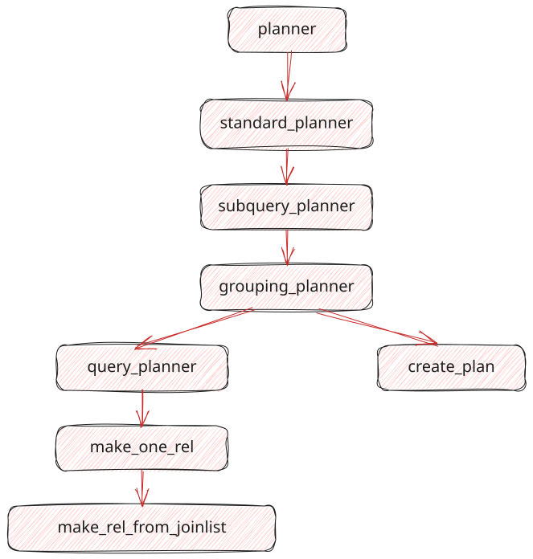

那个叫 Planner 的家伙在想什么？
简介
代码版本声明：本笔记内容主要基于 PostgreSQL REL_18_1 (Development version) 源码进行深度解析。
本书旨在深入解析 PostgreSQL 查询优化器（Query Optimizer）的内部工作原理。PostgreSQL 的优化器是数据库内核中最复杂、最核心的组件之一，负责将 SQL 查询转换为高效的执行计划。
目标读者
- 数据库内核开发者
- PostgreSQL DBA 和高级用户
- 对数据库内部原理感兴趣的学生和研究人员
内容概览
本书按照优化器的执行流程和核心组件进行组织：
- 逻辑重写与扁平化：介绍查询树（Query Tree）在进入代价模型之前的预处理步骤，包括子查询提升、外连接消除等逻辑优化。
- 路径搜索 (Scan & Join)：探讨如何生成单表访问路径以及多表连接路径，包括动态规划算法和遗传算法。
- 后置处理：涵盖连接路径生成之后的步骤，如分组聚合、排序、LockRows 以及并行计划的生成。
- 源码深度拆解：结合源码（主要基于 PostgreSQL REL_18_1），分析关键函数和数据结构。
- 附录：基础设施 (The Core)：详细讲解支撑优化器的核心数据结构和算法，如等价类、PathKeys、统计信息与代价估算。
学习建议
建议配合 PostgreSQL 源码阅读本书。优化器的代码主要位于 src/backend/optimizer 目录下。
优化器概览
本章基于 PostgreSQL 源码中的 src/backend/optimizer/README，简要介绍查询优化器（Query Optimizer）的整体工作流程和核心函数调用链。
优化器的主要任务是接收查询树（Query Tree），并生成最优的执行计划（Plan）。
核心调用流程
PostgreSQL 优化器的入口函数位于 src/backend/optimizer/plan/planner.c。
整个规划过程大致可以分为以下几个层级：

1. planner()
这是优化器的全局入口点。它的主要职责为：
- 如果配置了钩子函数（
planner_hook），则调用钩子。 - 否则，调用默认的优化器实现
standard_planner()。
2. standard_planner()
这是标准的优化策略入口。它的工作包括：
- 游标与参数设置：处理
CURSOR或其他上下文导致的相关标志。 - 预处理：调用
subquery_planner来处理顶层查询。 - 计划清理：在生成的计划树中，去除不需要的冗余节点，进行最终清理。
3. subquery_planner()
该函数负责处理一个特定的查询层级（Query Level）。对于包含子查询的 SQL，这个函数会被递归调用。
- 重写与预处理：处理
ANY/ALL子链接，提升子查询（Pull-up sublinks/subqueries）。 - 调用下层规划：当查询树被扁平化或重写后，调用
grouping_planner来进行实际的规划。
4. grouping_planner()
该函数负责处理查询的各个组成部分，包括：
- 处理
GROUP BY、HAVING、WINDOWfunctions、DISTINCT和ORDER BY等非 Join 操作。 - 首先调用
query_planner来计算基础的“扫描/连接”（Scan/Join）路径。 - 在
query_planner返回的路径基础上，添加聚合（Aggregation）、排序（Sorting）和分组等上层节点。
5. query_planner()
这是优化器的核心函数，专注于 Scan/Join 阶段的优化。
- 基础关系处理：为查询中的每个基表（Base Relation）生成扫描路径（如 Seq Scan, Index Scan 等）。
- 连接搜索：调用
make_one_rel()来搜索最优的表连接顺序。系统会使用动态规划（Dynamic Programming）或遗传算法（GEQO）来组合基础表，直到所有表组成一个最终的关系。
主要阶段总结
根据 standard_planner 的执行逻辑，优化过程可以概括为以下三个步骤：
-
预处理 (Preprocessing):
- 重写子查询，调用
eval_const_expressions化简常量表达式。 - 消除无用的外连接（Outer Join Elimination）。
- 分发和处理约束条件（Qualifiers）。
- 重写子查询，调用
-
扫描/连接规划 (Scan/Join Planning):
- 为基表生成访问路径。
- 计算两表连接、三表连接等，直到生成包含所有表的连接路径。
- 这部分主要由
query_planner和make_one_rel完成。
-
后置处理 (Post-processing):
- 在连接结果之上，添加 Grouping、Aggregation、Windowing 和 Sorting 等节点。
- 将包含最优代价的
Path树转换为最终的Plan树（create_plan阶段）。
源码路径参考
- 入口与流程控制:
src/backend/optimizer/plan/planner.c - 连接路径搜索:
src/backend/optimizer/path/allpaths.c,src/backend/optimizer/path/joinpath.c - 动态规划算法:
src/backend/optimizer/path/joinrels.c - 计划节点生成:
src/backend/optimizer/plan/createplan.c
查询树的预处理 (Query Tree Preprocessing)
当 PostgreSQL 优化器接收到解析和重写完毕的查询树（Query Tree）后，首先会通过 subquery_planner() 函数进行预处理。
预处理的主要目的是简化查询树，消除冗余结构并尽可能展平嵌套。系统会将复杂的表达式简化并规范化，从而为后续负责处理连接逻辑的 grouping_planner() 与 query_planner() 提供更清晰、扁平的基础结构。
以下内容结合 PostgreSQL 18.1 源码（核心逻辑位于 src/backend/optimizer/plan/planner.c 中的 subquery_planner），介绍查询树预处理的几个核心步骤。
1. CTE 与子查询的处理
在处理具体表达式之前，优化器需要先将查询块和子句展开。
- 处理 WITH 语句 (CTE): 系统首先调用
SS_process_ctes。如果 CTE 满足内联（Inline）条件，优化器会将其展开并转化为普通的RTE_SUBQUERY；如果不满足内联条件，则会为其单独生成 InitPlan 级别的 SubPlan，确保它在主查询执行前计算完毕。 - 补全 FROM 子句: 通过
replace_empty_jointree函数处理没有FROM子句的查询（例如SELECT 1）。优化器会为其挂载一个基础的RTE_RESULT节点，以便后续统一使用标准的连表 (JoinTree) 算法。 - SubLink (子引用) 提升 (ANY/EXISTS): 调用
pull_up_sublinks，将位于WHERE或JOIN/ON条件中的ANY/EXISTS等子查询提取出来，并尝试转化为半连接（Semi-Join）或反连接（Anti-Join）。 - 子查询扁平化 (Subquery Pull-up): 调用
pull_up_subqueries，尝试将FROM子句中基础的子查询与当前查询层级融合，减少查询嵌套层级。 - UNION ALL 展开: 遇到简单的
UNION ALL时，优化器调用flatten_simple_union_all将其解构为平铺的追加关系（appendrel），从而避免复杂的集合操作开销。
2. 关系表范围 (RTE) 处理
RangeTable 记录了查询涉及的所有表、视图及函数。
- 函数 RTE 内联与常量化:
preprocess_function_rtes负责处理FROM子句中的函数。如果函数不包含变量且为常量计算，系统会直接计算其结果；如果符合内联展开条件，则将其函数体展开并并入主查询。 - 虚拟生成列的展开:
expand_virtual_generated_columns会对表进行排查。当发现查询中引用了生成列（Generated Columns 的Var引用）时，优化器会用其背后的计算表达式进行替换，以方便后续的表达式化简。
3. 表达式预处理 (preprocess_expression)
预处理阶段的核心步骤之一，是对 TargetList、WHERE、HAVING、LIMIT 和 ON CONFLICT 等各个部分的表达式调用 preprocess_expression() 进行规范化处理。其核心操作包括：
3.1 连接别名还原 (Join Alias Variables Flattening)
通过 flatten_join_alias_vars，优化器会将因为使用了 JOIN ... USING 或自然连接所产生的连接别名变量，替换回它们在底层基础表中的原始列名引用（底层的 Var 引用）。这保证了后续的优化逻辑只需处理物理表字段。
3.2 常量折叠 (Constant Folding)
调用核心化简函数 eval_const_expressions。
该函数除了计算简单的常量算术外，还会对内置稳定函数（Immutable Function）的常量输入进行提早计算。此外，它能将深层嵌套的条件进行扁平化处理，如将 AND (A, AND(B, C)) 展平为 AND(A, B, C)。
3.3 条件范式化 (Canonicalize Qual)
经由 canonicalize_qual 函数，系统会对布尔条件（例如 WHERE 限定项）进行逻辑层面的范式转换，展平表达式并排查其中可能存在的互斥或冗余条件。
3.4 杂项 SubLink 转换与变量绑定
- 针对之前
pull_up_sublinks阶段未能处理的子查询（例如出现在SELECT目标列集合中的标量子查询），会在此处转换为SubPlan操作符。 SS_replace_correlation_vars会查找子查询中对上层父查询变量的引用，并使用Param（参数）将其绑定，建立父子查询之间的数据依赖关系。- 最终，对于
WHERE和HAVING顶层的条件判断，系统会调用make_ands_implicit剥除显式的BoolExpr包装，将其转换为隐式的Implicit-AND链表结构。
4. 后期合并与结构修正
在表达式处理完毕后，subquery_planner 还会进行一些清理操作，然后再将查询树交给 grouping_planner。
- HAVING 转化为 WHERE: 系统会检查
HAVING子句中的条件。如果发现其中不包含聚合函数，也不含易失函数（Volatile Function），系统会将其移动或复制到WHERE子句中去（例如单纯的HAVING col = 1）。这样可以在进入代价较高的Aggregate分组算子之前提早过滤数据。 - 外连接消除 (Outer Join Elimination): 通过调用
reduce_outer_joins。由于之前的步骤化简了WHERE表达式，系统会检查是否有WHERE条件要求由于 LEFT/RIGHT JOIN 产生的 NULL 值为非空（例如LEFT JOIN B ON ... WHERE B.id > 10）。如果存在这样的严格限制条件，这个外连接就可以被安全降级为执行效率更高的INNER JOIN。 - 移除无用 Result RTE: 最后调用
remove_useless_result_rtes，清理前面步骤中产生的，但目前已经失去作用的冗余RTE_RESULT节点。
经过预处理阶段的优化后，查询树被转换为更扁平、逻辑结构更清晰的形式，随后传递给 grouping_planner 继续后续优化。
源码参考
- 核心逻辑位置：
src/backend/optimizer/plan/planner.c中的standard_planner->subquery_planner。
子查询提升 (Subquery Pull-up)
子查询提升（Subquery Pull-up）是 PostgreSQL 优化器在预处理早期阶段的重要逻辑重写机制。其主要目的是消除不必要的查询嵌套层级，将查询树尽可能的“拍平”。一旦子查询和主查询成功合并，优化器在排列多表连接顺序 (Join Order) 时就能拥有更大的搜索空间，同时也能减少执行器在运行时的执行层级和开销。
1. 为什么需要子查询提升？
如果不进行子查询提升，位于 FROM 或 WHERE 子句中的嵌套子查询在最终生成的执行树中会保留为独立的查询节点（如 SubqueryScan 节点或 InitPlan/SubPlan 组件）。
这种隔离会带来以下两个问题：
- 连接重排受限：优化器无法将主查询中的表与子查询内部的表混合在一起进行 Join Order 优化，从而限制了寻找更优连接顺序的可能性。
- 运行时开销增加：在实际执行时，执行引擎可能会在不同层级上下文中进行多次调用，或者只能将子查询作为一个黑盒独立执行。
为了解决这个问题，PostgreSQL 的规划器在其 src/backend/optimizer/prep/prepjointree.c 中，主要通过两套机制来处理和提升子查询。
2. 处理 SubLink：pull_up_sublinks
在 PostgreSQL 的内部实现中，SubLink 通常指的是位于 WHERE 或是 JOIN/ON 过滤条件中的子查询。在 subquery_planner 启动时，优化器首先会调用 pull_up_sublinks() 来处理这些结构。
该逻辑依赖于递归函数 pull_up_sublinks_qual_recurse，它会遍历条件表达式树，针对不同类型的 SubLink 进行转化：
2.1 转化 ANY 子链接 (convert_ANY_sublink_to_join)
遇到类似 WHERE x.id = ANY (SELECT id FROM y)（常用的 IN (子查询)结构）时：
- 优化器会将其从
WHERE条件中提取出来，并转化为能够与上层父查询合并的JOIN_SEMI(半连接)。 - 如果其内部是一个包含常数的列表，例如
IN (1, 2, 3)，系统也会在这个阶段调用convert_VALUES_to_ANY尝试进行就地化简。
2.2 转化 EXISTS 子链接 (convert_EXISTS_sublink_to_join)
遇到 WHERE EXISTS (SELECT 1 FROM y WHERE x.id = y.id) 的结构时：
- 处理逻辑与
ANY类似，将其转化为JOIN_SEMI(半连接)。 - 如果原始条件包含
NOT否定修饰（如WHERE NOT EXISTS ( ... )），优化器将其转化为JOIN_ANTI(反连接)。这使得优化器在后续的物理计划评估中，能够选择如 Hash Anti-Join 等高效的算子来进行排他性过滤。
3. 合并 Subquery：pull_up_subqueries
有别于作为条件表达式存在的 SubLink，正规的 Subquery 通常指的是位于 FROM 子句中、作为数据源使用的子查询（例如 SELECT * FROM a JOIN (SELECT * FROM b) c ON ...）。
当处理完 SubLink 后，规划器会调用 pull_up_subqueries()，尝试将 FROM 列表中的子查询结构展开并融进主查询。
3.1 简单子查询 (is_simple_subquery / pull_up_simple_subquery)
满足以下条件的会被判定为可以提升的“简单（Simple）”子查询：
- 不包含
GROUP BY和HAVING子句。 - 不带有
LIMIT和OFFSET。 - 没有使用
UNION、INTERSECT、EXCEPT等集合运算。 - 选择列表中不包含聚合函数或窗口函数。
在确认是简单子查询后，pull_up_simple_subquery() 会执行以下操作：
- 将该子查询中的
FromExpr节点包含的对象，合并到主查询所在层级的FromExpr树中。 - 剥除该子查询外层的包装节点。
- 调用
pullup_replace_vars函数，处理和替换关联的变量（如果涉及到 Grouping Set，还需要将其装入PlaceHolderVar来维持语义）。
3.2 提升简单的 UNION ALL (pull_up_simple_union_all)
对于类似 FROM (SELECT x FROM a UNION ALL SELECT x FROM b) 的结构：
只要确认它不带有 ORDER BY，没有 LIMIT，并且是单纯的 UNION ALL（不需要去重），优化器就会调用 is_simple_union_all。
它会将这个 UNION ALL 树转换为平铺的追加关系列表 (AppendRelInfo)。这样就可以将集合操作展平为底层的 Append 节点，避免不必要的子查询资源开销。
3.3 处理 LATERAL 引用
在引入了 LATERAL 关键字后，提升逻辑变得更加复杂，因为它涉及对外层查询的变量引用。
如果在 pull_up_subquery 的过程中存在 LATERAL 产生的跨层引用，系统会通过调用诸如 IncrementVarSublevelsUp 等逻辑来修正 Var 变量的层级深度（Sublevel）。并且通过 CombineRangeTables 合并底层 RangeTable (范围表) 中的依赖信息，确保即使是这种带有侧向引用的子查询也能在语义不变的前提下安全“拍平”。
外连接消除与连接移除 (Outer Join Elimination & Join Removal)
当查询树完成了表达式的重写和规范化之后，PostgreSQL 优化器会尝试通过逻辑推导和约束条件，精简查询树中不必要的表连接（Join）节点。 一棵被修剪和化简过的查询树不仅提高了后续执行的效率，也极大地减少了动态规划或遗传算法在生成 Join Order 时需要枚举的组合空间。
相关的优化逻辑主要分为两个阶段：
- 外连接消除 (reduce_outer_joins)
- 连接移除 (remove_useless_joins)
1. 外连接消除 (reduce_outer_joins)
源码位置：src/backend/optimizer/prep/prepjointree.c
执行时机：由查询的主计划函数 subquery_planner 调度。
外连接（Outer Join）相较于内连接（Inner Join），会限制优化器对表连接顺序的自由排列组合。reduce_outer_joins 的主要任务是遍历查询条件（如 WHERE），检查是否存在能够使外连接降级（由于 NULL 值过滤条件）并转化为安全且更高效的 Inner Join 或 Anti Join (反连接) 的情况。
1.1 两次遍历策略 (Pass 1 & Pass 2)
为了提升效率，reduce_outer_joins 使用了两轮过滤法：
- 粗筛阶段 (Pass 1:
reduce_outer_joins_pass1): 遍历提取底层节点的Relids（涉及的基础表），并标记查询中是否存在真正的外连接（设置标志位contains_outer）。如果没有外连接存在，则立即返回，省去后续的处理开销。 - 重写阶段 (Pass 2:
reduce_outer_joins_pass2): 仅对确认含有外连接的查询部分，进行严密的逻辑推演和类型转化。
1.2 外连接向内连接的转化 (Outer to Inner)
将外连接降级的核心在于寻找表达式中存在的严苛约束条件 (Strict Quals)。
优化器会调用 find_nonnullable_rels 在条件子句中搜寻：是否某个条件要求原本由于外连接产生的 Null 值端，必须是个非空合法实体。
例如，执行 LEFT JOIN B ON ... WHERE B.id > 10 时。如果在执行左连接后 B 表的行以 NULL 补充，而在条件评估阶段遇到 NULL > 10 会被判定为 False 而过滤掉这些行。那么这个保留了左侧不匹配记录的“左连接”其实和内连接没有任何区别。
面对这种依赖性质：
- LEFT JOIN 会被转化为 INNER JOIN。
- RIGHT JOIN 则可能转为 LEFT JOIN（同时翻转关联左右侧）或转为 INNER JOIN。
- FULL JOIN 会根据左右侧各自的约束条件情况，降级成 LEFT JOIN、RIGHT JOIN，或直接化简为 INNER JOIN。
1.3 外连接向反连接的转化 (Outer to Anti)
除了转化为内连接，外连接在某些情况也可以转为反连接。
通过调用 find_forced_null_vars，优化器会检查查询条件中是否明确要求连接生成的特定列必须为 NULL（常见的例子是 LEFT JOIN B ON ... WHERE B.id IS NULL）。
在这种情境下，由于逻辑实际上是为了寻找无法在右表找到匹配记录的行，系统会将该 JOIN_LEFT 转换为 JOIN_ANTI (反连接)。在物理执行层面，Anti Join 在找到第一个匹配项时就可以停止搜索，相比保留左连接具有显著的性能优势。
2. 无用连接的移除 (remove_useless_joins)
源码位置：src/backend/optimizer/plan/analyzejoins.c
执行时机：由 query_planner 的起始阶段进行调用，发生在生成扫描路径和连接路径的前夕。
在复杂的应用或基于视图的查询中，常常包含对当前结果没有贡献的表关联。此时，优化器可以识别并彻底移除某些表连接（通常针对 LEFT JOIN 的右侧表）。
2.1 移除的判断依据 (join_is_removable)
要安全地将 LEFT JOIN 中的右侧表移除，必须同时满足以下严苛的条件验证：
- 没有在上层提供输出列：被连接的右表中的列，没有在更高层的
TargetList(选择目标集)、HAVING等子句中被引用（优化器会通过attr_needed属性检查）。 - 不改变基数 (Cardinality)：移除右表不能影响结果集行数或数据唯一性。也就是说，右表能够提供的连接匹配项，对于左表的每一行，必须且只能匹配出最多一行，否则会引发由于交叉连接产生的行数变动。
- 优化器会通过
rel_is_distinct_for等逻辑。 - 检查连接条件是否能保证右表记录的唯一性 (Unique)。
- 这通常依赖于数据库里的唯一索引 (Unique Index) 或主外键约束 (Foreign Key)，且这些关联必须使用等值操作符（Mergejoinable Equality Operators）。
- 优化器会通过
2.2 状态清理与重组 (remove_leftjoinrel_from_query)
如果一段关系满足了被抛弃的条件，优化器不仅要在查询树结点上剥除该分支，还需要清理那些由此连带创建的衍生结构。
在判定废弃前，规划器已经为其建立了例如约束信息 RestrictInfo、等价类 EquivalenceClass，甚至还有部分 PlaceHolderVar。
在确认移除该表及其相关的 Relid（以及包含的 Outer Join Relid ojrelid）后，规划器必须进行全覆盖的清算操作，把涉及这些表的关联辅助结构全部删去，以免这些废弃的数据状态影响接下来的动态规划寻优操作。
单表扫描路径生成 (Access Paths)
在 PostgreSQL 的查询优化流程中，当查询树完成了逻辑重写、子查询提升、表达式扁平化及外连接消除等预处理步骤后，规划器（Planner）将进入基于代价的优化阶段（Cost-Based Optimization, CBO）。
代价优化的首要任务，是为查询中涉及的每一个基表（Base Relation）计算可用的单表访问路径（Single Relation Access Paths）。在这个环节，无论是顺序扫描、索引扫描还是并行扫描，都会被枚举和评估，为后续的代价比较和表连接（Join）提供基础。
本章结合 PostgreSQL 18.1 源码（主要位于 src/backend/optimizer/path/allpaths.c 和 indxpath.c），介绍单表扫描路径的生成机制及其数据结构。
1. 扫描路径生成入口：make_one_rel
生成基础路径的工作主要由 make_one_rel() 函数（位于 allpaths.c）统筹。它的最终目标是确定多表连接的最佳顺序，但在开始表连接之前，它必须先为每个基表生成访问路径。
1.1 两阶段生成机制
在 make_one_rel 中，单个基表的路径生成分为两个主要阶段：
- 估算规模 (
set_base_rel_sizes)：首先估算该表的输出行数（Rows）和行宽（Width）等统计信息。 - 生成路径 (
set_base_rel_pathlists)：结合上一步估计的规模，生成读取该表的物理路径（Path）。
分阶段的原因：
这是因为并行查询和参数化路径的判定非常依赖对表规模的精确估计。例如，如果优化器在估算时发现一个表的数据量非常小，就会将 consider_parallel 标记为 false，从而跳过并行扫描的路径生成。分离规模估算和路径生成，可以为全局规划提供更准确的比对基准。
1.2 RelOptInfo：关系优化信息
在规划阶段，每张基表（包括中间结果和子查询）都会被封装为一个重要的结构体——RelOptInfo（Relation Optimization Info，定义于 nodes/pathnodes.h）。
在路径生成阶段，RelOptInfo 包含以下几个核心字段：
rows/reltarget: 预估的输出行数和列宽，直接影响后续的扫描代价计算。baserestrictinfo: 与当前表相关的WHERE过滤条件，已被解析为RestrictInfo构成的列表。pathlist: 一个链表（List），存放由set_base_rel_pathlists生成的候选扫描路径（Path）。cheapest_startup_path/cheapest_total_path: 记录了执行代价最低的两条评估结果——启动代价最小的路径和总代价最低的路径，它们会被缓存以便后续快速选用。
2. 顺序扫描 (Sequential Scan) 与并行扫描
顺序全表扫描（SeqScan）是最基础的访问方式。当缺乏可用索引或索引代价过高时，数据库会通过遍历表的数据块来读取记录。
在 allpaths.c 的 set_plain_rel_pathlist 函数中：
2.1 基础顺序扫描：create_seqscan_path
优化器默认会添加一条 SeqScan 路径：通过调用 add_path(rel, create_seqscan_path(root, rel, required_outer, 0)) 实现。
顺序扫描按照堆表（Heap Table）的物理存储顺序逐块读取。
- 代价组成：主要由表占用的页数（
rel->pages）决定连续 I/O 的开销，其次由行数（rel->rows）决定 CPU 进行条件过滤的开销。
2.2 并行化扫描 (create_plain_partial_paths)
在支持并行查询后，系统提供了部分顺序扫描（Partial Sequential Scan）。 在添加了基础的顺序扫描之后，优化器会检查是否符合并行条件：
if (rel->consider_parallel && required_outer == NULL)
create_plain_partial_paths(root, rel);
如果条件允许，内部核心逻辑调用 compute_parallel_worker() 根据数据规模和相关阈值参数计算出需要启动的后台工作进程 (Background Workers) 数量。
当决定并行执行后，系统会通过 add_partial_path 添加一条指定了 parallel_workers 的分支战线。多个 Worker 共享数据块分配游标，并发读取数据。
3. 索引扫描 (Index Paths) 机制解析
对于需要高选择性过滤（High Selectivity）的查询，B-Tree 等索引能显著减少数据读取量，从而提升查询效率。
在 set_plain_rel_pathlist 之后，系统调用 indxpath.c 中的 create_index_paths()，生成多种基于索引的候选路径。
3.1 Index Scan：标准的索引扫描
当查询的 WHERE 条件与某个建立的索引 (IndexOptInfo) 匹配时，build_index_paths 会生成一条 Index Scan Path。
回表 (Heap Fetch)：
标准的索引扫描在找到符合条件的索引条目和目标 TID（Tuple ID）后，仍需要回表读取堆表（Heap）中的实际记录块，以提取 SELECT 所需的其他列数据及进行多版本可见性（MVCC）的判断。
3.2 Index Only Scan：覆盖索引与可见性映射
如果查询的目标列完全被索引覆盖（如 SELECT id FROM table WHERE id = 5），则可能不需要回表读取。
MVCC 挑战与 VM (Visibility Map) 设计：
由于 PostgreSQL 在 MVCC 机制下，通过表记录的标头 (xmin, xmax) 来判断事务可见性，索引条目本身通常不包含可见性信息。
为了减少回表开销，PostgreSQL 使用了 VM (Visibility Map，可见性映射文件)。在考虑 Index Only Scan 时，只有当 VM 标记对应数据块为 all-visible （即该块中的所有数据对所有活跃事务清晰可见）时，查询此时可以直接使用索引数据而跳过回表，进一步降低代价。
3.3 Bitmap Index/Heap Scan (位图扫描)
当查询包含多个涉及不同索引的条件，或者使用 OR 和 IN 等查询模式时，独立的 IndexScan 在频繁回表时可能带来大量的随机 I/O (Random I/O) 操作。为此，系统采用了**位图扫描（Bitmap Scan）**方案。在 indxpath.c 中，主要由 generate_bitmap_or_paths 处理。
- 位图索引扫描
Bitmap Index Scan：各个索引分支独立检索，且不立刻回拉真实数据，而是记录下符合条件的表块位点，在内存中形成一个按位标识（Bit）的图谱。 - 位图操作
BitmapAnd/BitmapOr：通过对不同的索引结果图谱进行按位与、按位或操作，快速合并出最终的目标图谱。 - 位图堆表扫描
Bitmap Heap Scan：根据合并后的位图结果，严格按照物理数据块地址的前后顺序去批量读取真表。这种方式将大量分散的随机读取转化为类似顺序读取的连续 I/O 查询，大幅减少了磁盘寻址时间。
4. 参数化路径 (Parameterized Paths) 的运用
在评估基表的访问路径时，PostgreSQL 能够前瞻多表连接（主要是嵌套循环连接 NestLoop Join）在实际执行时的需求。
当大表 A 和小表 B 进行连接（如 A JOIN B ON A.val = B.id）时，若 B 作为被驱动的内表，可能会根据 A的每一行重复扫描全表。此时如果将关联条件（如 A.val）作为一个**在途传输参数（Parameter）**下移到 B 的扫描阶段，B 可以利用此参数在读取前提前应用索引过滤。
- 在 PostgreSQL 术语中，这称为参数化借力路径 (Parameterized Path)。
- 系统通过构造
ParamPathInfo（参数化信息），并在create_index_paths时生成不仅依赖自身WHERE条件、还依赖于外部关系过滤项的索引路径。这种设计虽然自身执行的可行性取决于外部条件，但在被NestLoop Join采纳后，可以大幅降低连接运算的全局代价。
5. 路径剪枝 (Path Pruning) 与 add_path 函数
由于一条 SQL 可能会为每个基表生成多达几十条不同的扫描路径（如不同索引的单查、组合位图扫、并行等），如果全部保留它们将导致多表连接组合时发生指数级路径爆炸（Path Explosion）。为此，优化器采取了**路径剪枝（Path Pruning）**策略。
所有的候选扫描路径都会通过统一的函数入口进行过滤校验：add_path(RelOptInfo *parent_rel, Path *new_path)。
add_path 会比较新路径和 pathlist 中现有的旧路径，评估是否保留新传入的路径：
- 按代价修剪（Cost Fudge 裁决）：该函数会对新路径和已有路径的起步代价（
startup_cost）与总消耗代价（total_cost）进行比较。如果一条新路径在启动代价和总代价上都显著高于现有的某条路径，则该新路径被认为劣势明显，将被直接淘汰。系统在比较时引入了一个极小比例（如fuzz系数1e-10级别）的缓冲乘数来忽略微小的舍入误差。 - 受排序属性影响的特例 (Pathkeys 的保护)：当一条新路径因为执行效率稍慢，原本要被淘汰，但它附带的输出特征恰好满足了全局必要的排序序列（即具备
pathkeys排序特质，如依靠 B-Tree 生成的顺序）时，它有可能不会被直接剔除。预先排好序的路径在后续的ORDER BY或Merge Join中可以免除巨大的重新排序开销，因此add_path将会根据排序价值对其通融和保留。
经过 add_path 严格的层层淘汰后，RelOptInfo->pathlist 列表中最终只保存了在各个性能维度下最具竞争力的少数几条扫描路径，这大大提升了优化器在后续关联查询排布阶段的处理效率。
多表连接次序与等价类推导 (Join Ordering & Equivalence Classes)
当查询从单表查询跃升为多表连接（Multiple Joins）时，优化器将面临最为计算密集型的任务：确定最优的表连接顺序（Join Order）以及连接方式（Join Methods）。
在理论上，N 张表的连接顺序组合数量随着 N 呈指数级增长。为了在合理的时间内寻找最优解，只要参与连接的基表数量低于预设的阈值（geqo_threshold，默认值为 12），规划器就会使用自底向上的动态规划（Bottom-up Dynamic Programming）算法。
本章结合 PostgreSQL 18.1 在 src/backend/optimizer/path/joinpath.c、joinrels.c 和 equivclass.c 中的源码，剖析多表连接时的底层优化决策。
1. 动态规划基础
PostgreSQL 的多表连接优化使用了经典的关系代数优化策略——动态规划搜索。
1.1 从单表到连接结果集
动态规划采用构建最优子结构的策略：要找出 N 张表的最优连接顺序，首先计算任意 2 表连接的最优路径，接着基于这些 2手表的结果集计算 3手表的最优连接，以此类推。这一过程的核心调度函数为 make_rel_from_joinlist。
算法主要调用 standard_join_search 函数来实现 DP 流程：
- 第一层 (Level 1)：处理单表访问路径（由
set_base_rel_pathlists阶段生成完成）。 - 多层状态合并 (Level 2~N)：外层系统从 2 张表组合开始迭代。在每一层的循环中，新的组合都是由前置层的最优子集经过组合而来，这一任务核心依赖
join_search_one_level递归枢纽进行计算。
1.2 左深树与灌木丛树
在连接树形状的探索中，典型的树状结构主要为两种：
- 左深树 (Left-deep Tree)：之前的连接结果集（作为左侧表）直接与单个新的基表进行合并连接。由于其中一方通常是单表，这种结构极大地降低了执行器在运行时内存上下文的开销，非常契合嵌套循环带索引扫描（NestLoop + Index Scan）的流式执行模式。
- 灌木丛树 (Bushy Tree)：支持两个作为临时中间结果集的复合关系之间进行连接合并。这种结构在面对两份结果集均具备较高过滤性时，能够带来卓越的连接性能提升。
在现代的 join_search_one_level 遍历下，除支持传统的左深树枚举以外，也增加了探索 Bushy 树可能性的选项，这为寻优阶段提供了更大的解空间。
2. 等价类 (Equivalence Classes, EC) 推导
在启动全面的动态规划之前，优化器必须处理存在于系统查询中的多重等值约束条件，其逻辑实现在 src/backend/optimizer/path/equivclass.c 中。
2.1 隐式约束下推
在复杂的 SQL 语句中，类似 WHERE A.id = B.id AND B.id = C.id AND A.id = 5 的级联关联条件非常普遍。
借助等价类机制（EquivalenceClass 实体），PostgreSQL 将这些互相关联的过滤要求整合在一起，将 {A.id, B.id, C.id, 5} 识别为同一组变量集合。
随后调用 generate_implied_equalities 时：系统自动推断并衍生出隐含的条件约束，比如向未明确说明的 B 和 C 生成 B.id = 5 及 C.id = 5 的精确相等限制约束。
这类隐含条件的下推操作能够让在底层独立扫描对应的表时直接走索引读取或对查询结果进行强力剪裁，大大避免了连接上亿规模数据前无效联接的资源消耗。
3. 连接路径节点生成：populate_joinrel_with_paths
当动态规划选定要将两个表集合合并成一个新的组合结果后，系统会将探索物理连接方式的工作分配给 populate_joinrel_with_paths() 函数生成相应的路径。
3.1 嵌套循环与 Hash Join 探测
函数首先调用 match_unsorted_outer，不考虑输入侧表顺序，尝试生成以下基础连接形式：
- NestLoop Join (嵌套循环连接)：若系统具有可用的参数化路径（Parameterized Paths），外部表的结果即可依次充当向内层下发的参数以命中内表索引。这种带索引的嵌套循环尤其在其中一方表非常小，且被命名的列存在对应下层优化时效率很高。
- Hash Join (哈希连接)：面对需要处理等值条件的大规模关联匹配，如果经内部规模检查内层表被预估可以顺利在内存的哈希分配桶（Hash Bucket）中载下，那么 Hash Join 即作为高效无序吞吐的基础连接方式呈现出强大的效能。
3.2 排序优先归并：Merge Join
接下来的逻辑由 sort_inner_and_outer 负责。
Merge Join (归并连接) 对两侧表输出行的相对顺序高度敏感，它需要通过检索左右两侧流属性上的排序能力信息（pathkeys 特征）是否吻合联接标准。对于天生已具备一致顺序特征的结果流，Merge Join 可以利用极低的算力优势组合两侧；如果双边或单边缺失排序属性，优化器也会预估强加上 Sort 节点来进行全量重新归档的时间成本，加入代价对比系统之中。
3.3 缓存中间层：Materialize
在处理高嵌套深度的关系时，若系统的某一处于内层子查询操作因为不带索引等原因被嵌套循环高频率往返检索而造成巨大损失开销时，优化器可自动加入 create_material_path 在途中增设一条具有执行临时落盘内存保护作用的中间缓存（Materialize 节点）集预留路径保障。
最终，由不同的联合策略所搭建的路线都被发送到 add_path 函数进行效用和总体花销的比对裁决，代价高且无辅助优化的较差选择被抛卸不用，而具备最好收益（最低耗或最具排序保留项优势等）的节点将挂载回最终生成组的 RelOptInfo->pathlist 的保存战绩单。
遗传启发算法 (GEQO, Genetic Query Optimizer)
在前一章中，我们解释了系统如何借助自底向上的动态规划（Dynamic Programming, DP）来获取理论代价最优的表执行路径顺序。
然而，随着需要关联表的数目提升，DP 算法对排列组合数的计算时间呈现出指数级别的膨胀。由于在某些涉及许多基表的场景中（当数目超越 geqo_threshold 的设定阈值，默认 12），让引擎仅为了选择连接次序而对巨量组合进行穷举所消耗的时间代价，甚至可能大于数据库引擎直接进行实际访问数据处理的粗暴方案。
为了解决计算耗时的上限问题，PostgreSQL 引入了 GEQO (Genetic Query Optimizer 遗传式查询优化器)。 它并未强求在有限时间内寻找到最优组合底牌序列，而是运用以模拟生物进化特征规律作为基底的启发式搜索，在短时间内迅速输出一份性能可以满足使用要求、贴合次优组合状态的可执行计算计划。
1. 原理：连接排序优化与旅行商问题 (TSP)
通过应用算法工程学封装理论，可以将表的连接排序调度映射视为与旅行商问题 (Traveling Salesman Problem, TSP) 等效的数据排布解法。
- 城市 = 对等参与需要进行 Join 计算匹配的基础表。
- 路径 (Tour) = 代表实际生成的表之间相连接的串联运算流程先后序列状态。
- 距离代价 (Path Cost) = 基于具体推演生成的排序链中调用底层评价模型所预计生成总代价（Total Cost）。
由于需要规避状态过于冗杂繁复，GEQO 系统受制于限定算法体系规则范畴而在 PostgreSQL 中被固定下来主要支持在左深树结构（Left-deep Tree 线性联接）序列范围内提供染色体组合计算推演，极大地约束了运算探索框架。
2. GEQO 的系统演化流程机制
整体处理入口主要通过 geqo_main() 来驱动。按照算法阶段分布可解构包含下面这五个维度的运作模式：
2.1 种群初始化 (Initialization)
在运算初期调用 random_init_pool() 函数构建。
根据基表的参与基数运算预定大盘大小情况，通过随机生成部分线性状态联接节点连接序组合构建形成了若干“祖先个体序列”载入初始种群池（Pool）以拉开推演。
2.2 适应度测算 (Fitness Evaluation)
对新生成的每一个序列路线，必须进行可用性的衡量定级，交予在 geqo_eval() 中运算落实。
GEQO 系统不额外造一套执行度量框架，而是选择委托向动态规划 (DP) 使用过的既有的核心评价基调引擎模块，强制以自身次序为输入利用 cost_qual_eval 核算最终完工的 Join Tree 总代价值作为该个体在此池内的生存底盘——即适应度 (Fitness) 给定评价。
最终经统一整理借由 gimme_pool_size() 将成员对象根据适应分数排序重组制定名次列表 (Ranking)，优等排位成员具备被抽取权衡更强势竞争基调。
2.3 选取保留 (Selection)
系统根据成员等级利用 geqo_selection.c 所持的 线性排位选取策略 (Linear Ranking Selection) 来抽选可以进入接下来繁殖过程繁衍迭代运算的基元。
该逻辑允许对排名最顶部消耗代价值较少的高端优胜种子给予更高优先级别的参与继承繁殖选中机遇，而并不完全直接淘汰排底成员以防系统过度提前卡死于有限相似选择（保证基因延续活态环境）。
2.4 互斥与结合运算：交叉重组 (Crossover / ERX)
这是针对下一代特征选出最有效的提取途径模块。调用 geqo_erx.c 实现应用较成熟阵列法：边缘重组交叉算子 (Edge Recombination Crossover, ERX) 技术体系。
为了最大限度使关联表中已经证明了是效率较高执行关系相邻属性得以保存下沉。算法利用统计前后子嗣双成员父母方状态的特定组合关联存在率来约束子代的连结点靠拢概率取定。以此使得对关联操作最佳效果表态关系得以最大限度通过算法规则强制遗传留存到了新生代的组链之中去。
2.5 避免极化：随机突变 (Mutation)
受生物规律制约若连续运算而毫无外界异化插入则将最终令系统池被趋同方案极具固化形成名为 局部位段低谷滞定 (Local Minima) 的瓶颈现象。
通过 geqo_mutation() 组件，对少数特定生成的重组代种成员节点刻对其中位阶第三节点以第五节点发生强行的数据颠倒乱序强制推衍变换突改扰乱。通过给入差异态变体解结构破突该原僵局使整体探索圈拓展脱离旧框架极化困境泥带。
3. GEQO 运用的影响及约束条件
经过基于 geqo_effort 参数限定控制预留循环量而演化后系统将由外部收拢命令。剩余选池列表中具有排名最高适度表现个体所指定的路由模型成为此波推演获利采用解下传优化阶段交表。
基于 TSP 演变寻找推论特性使得计划选择将由此面对以下的随机性系统性特性情况：
不稳定特异点及其处理
对于参与数跨度极其庞杂连接视图使用本算法推算出来的最佳次优选项路径带有本质上的部分非绝对唯一规律特性，即对同类环境条件下再次向核心抛出的特定极繁 SQL 所生成得出的解释剖析结构及预期执行结果执行路途方案 Explain Plan（尤其是各个表的介入组合位情况）存在偶发变化可能，查询时长也会轻微动摇。 在工程生产排障如需杜绝对该类型现象可以考量介入如下干预：
- 锁定执行状态可以通过向
geqo_seed自定义下放指派某个确认复用不变的数字型种子以固化整体运算环境对同一运算方案提供相对可复述锁闭推测。 - 牺牲评估阶段长解析消耗换回运算结构死算保底：针对可耐高限查询可以直接运用
SET geqo = off去指令规划放弃算法随机匹配跳步或者将其限压使用配置如放大geqo_threshold开关，使得庞杂基群硬向以动态排列框架去硬铺强行执行枚举保证运算计划唯一性。
后置优化与高层算子拼接 (Post-Optimization & Upper Planner)
如果说查询规划的底盘（即底层扫描与表连接路径生成）负责解决数据访问的效率和顺序问题，那么高层优化器（Upper Planner）的任务则是将这些基础数据组装为符合查询语义中关于分组、排序及去重等高级特性要求的结果形式。
当 FROM 和 WHERE 构建出的表连接网络被 query_planner 评估并返回具有最优代价的 RelOptInfo 后，规划过程会返回主调度函数：grouping_planner（定义在 src/backend/optimizer/plan/planner.c 中）。
在 grouping_planner 阶段，优化器会根据 SQL 语法树的要求，逐级向执行计划树添加 GROUP BY (聚合), WINDOW FUNC (窗口函数), ORDER BY (排序), DISTINCT (去重) 以及 LIMIT/OFFSET (截断) 等高级逻辑算子。
本章结合 PostgreSQL 18.1 代码介绍这些高阶算子的生成过程。
1. 高层关系：Upper Rel 与 grouping_planner
与底层基表 (Base Rel) 或表连接节点不同，PostgreSQL 为了处理高层逻辑，将节点抽象出了 Upper Rel (上层关系) 的 RelOptInfo 表示，通过 UPPERREL_GROUP_AGG、UPPERREL_WINDOW 等状态常量对这些过程进行分层处理。
在 grouping_planner 中，节点装配遵循严格的顺序。每处理完一层的特征限定，就会包装并生成一个包含了之前阶段计算结果的全新 RelOptInfo 节点：
- 底层扫描与联接 (
query_planner返回的基础结果)。 - 若存在聚合操作，生成分组与聚合信息
UPPERREL_GROUP_AGG。 - 若存在窗口函数，追加窗口状态计算
UPPERREL_WINDOW。 - 若存在
SELECT DISTINCT，附加去重算子处理。 - 若请求排序，追加
ORDER BY处理层UPPERREL_ORDERD。 - 最后若存在数据范围要求，追加
LIMIT / OFFSET计算特征层。
以下我们对若干核心模块进行剖析。
2. 聚集计算的规划 (Aggregation & Grouping)
对于包含聚合函数（如 SUM(), AVG()）或使用 GROUP BY 的查询，系统会进入 create_ordinary_grouping_paths() 过程去建立相应的处理路径组合。
PostgreSQL 引擎在实现聚合计算时，主要包含以下三种执行机制算子：
2.1 基础聚合 (Plain Aggregate)
此类算子针对 SELECT count(*) FROM table 等整体聚合操作（不带 GROUP BY）。
节点实现较为简单：输入数据并维护记录计数及运算值，全流遍历结束后返回唯一单行记录。算子启动成本极低。
2.2 排序归并聚合 (GroupAggregate / Sorted Aggregation)
对输入数据拥有要求，输入流必须满足按 GROUP BY 列特征进行了排序。
- 计算原理：类似于扫描与状态累加。处理中不断对比上一输入值是否变化，若同一组合属性的值相等即进行状态统计；当发现键值更新后，结算上一聚合组进行数据输出。
- 代价考量：在执行期间占用少量运存，性能好。然而，若底层所提供的路径不包含匹配的属性排序（例如采用基于 HashJoin 产生的无序结果集），那么优化器必须硬性估算加入
Sort Node重装排序的时间与算力代价。
2.3 哈希聚合计算 (HashAggregate & Disk Spill)
此类算子不预先要求数据集的排列状态。
- 机制方案：节点利用内存变量（受
work_mem上限约束）建立哈希查找表关联。读取流式数据将其打入对应的 Hash 值桶（Bucket）内实时记录，遍历完成后批量输出对应组状态。 - 落盘保护机制升级：自 PG 13 起加入了 HashAgg Disk Spill (落盘溢出存储功能)。如果判定分组容量或者数量庞大，可能造成内存限制超限被触发，它能额外调派多批次的写入缓存溢出到外部磁盘做临时暂存记录处理以提高聚合稳定性。
3. 处理窗口函数 (Window Functions)
聚合操作后如必要，将处理 UPPERREL_WINDOW（源码可见：planner.c: create_window_paths）。
在遇到如 SUM(x) OVER (PARTITION BY a ORDER BY b) 语法时：
- 窗口函数可以看做带扩展作用域的定制版排序集合需求，其算子必需输入记录拥有满足对应要求的排序状态。 即数据必须按照
PARTITION及ORDER相印符合。 - 同窗口合并处理：优化器会在
group_window_funcs流程排查。若当前同一查询结构内涵盖多个具有同样的OVER(PARTITION BY... ORDER BY...)窗函数结构要求，这使得它们可以在统一序列状态下的单个物理窗口运算算子循环完成处理；差异条件的则隔离进行对应次序执行分配。 - 系统考察传入底本是否自带契合所需求的底层输出序列特征（
pathkeys包含情况），对未对口的自动附加明确指定的Sort Node作为强保障节点约束。
4. 排序路径：增量排序 (Incremental Sort)
排序处理作为系统开销极大的操作类别之一，所有的外部需求进入 create_ordered_paths 整合评估模块生成关联 Sort 结果。
近年来 PostgreSQL 添加了增量排序（Incremental Sort）这一项具有实际提速效用的执行动作节点。
解决场景分析：
在以往，处理请求 ORDER BY a, b 发现来自执行底图有通过针对 a 构建的索引产生的结果流，此时底层结果“仅按 a 完成了排列”（提供 Prefix Sorted 部分前缀有序效果），但引擎只能判断出 pathkeys 不完全满足要求，转而将全体记录退回做纯粹内存的全体重新重排序工作。
Incremental Sort 执行逻辑：
现有的检测体系会捕获提取 Prefix Sorted 的优势特性。执行期间读取具有一致 a 值的所有关联记录后将那部分同值子片段截取缓存下发交予内部 Incremental Sort 进行非常小的量级微型重排并直接返回送出。极大程度减少大规模一次性阻塞，加快流失输出和减负查询总开销量。
5. 翻盘影响：截断分析 (Limit / Offset) 对路径的反馈机制
在使用类似 LIMIT 10 的数量限制时，这并非简单在输出流水线的最尾端裁撤数据输出，其蕴含着足以重塑系统底层总执行计划选择偏好的强指向参数特征。包含在逻辑组装模块的 create_limit_path() 过程中。
当系统识别带有明显的限制指令约束时：
此时针对优化器早期为表关联节点保留的候选组合，两套并存的主计划指标：cheapest_startup_path (启动代价最低但全局最终执行耗时可能表现中等) 和 cheapest_total_path (初期开销沉重然而遍历结果完全集合最为迅速有效) 的对比关系会由于目标需求的介入遭遇反转。
例如：针对某双表连接提取 LIMIT 10 时。普通无约束选择中 Hash Join （因具有出色的查询扫描速度从而有着强优越的全局总成本估值），由于启动处理的准备哈希桶时必须完整通量全内部检索导致极高的预开销。在限制取数的特例下，系统会对只需要出库几条的估模型下偏倾支持底层无需庞大初始化可立即提取比对行并且具有良好单匹配检索流指标的 NestLoop 或者是 Index Scan 等算力路线。经过带有上限数量补偿值的公式重新推导换算，LIMIT 将实质改变执行算子的类型优选评估体系策略走向，倾向选择最优时间能够产出起手记录的高启动敏捷节点算法。
并行执行计划生成 (Parallel Query Planning)
PostgreSQL 在 9.6 版本引入了并行查询架构，截至 18.1 版本，该架构已深度整合至代价优化器（CBO）中，成为处理分析型查询的重要手段。
并行查询的核心思想是：在处理大规模数据扫描或复杂的聚合操作时，利用多个后台工作进程（Background Workers）分担计算任务，最终由发起查询的主进程（Leader Process）进行数据整合。
本章将探讨规划器中与并行执行相关的设定，涉及部分路径的生成、数据的收集汇总以及并行连接机制。
1. 并行的基础构件：Partial Path 与 Gather
在优化器中，生成并行计划的基础在于两种特殊的算子抽象：部分路径和收集节点。
1.1 部分路径 (Partial Path)
在“单表扫描路径生成”阶段，set_plain_rel_pathlist 在生成 SeqScan 路径的同时，也会调用 create_plain_partial_paths 生成一条 Partial Path（部分路径）。
特点： 部分路径表示该路径分支如果由某个独立的工作进程执行，它只会输出整体数据的一部分（Slice）。 为了实现互不干扰的切片，底层执行引擎通过动态共享内存（DSM）中的共享计数器（Block Counter）协调扫描进度。由于各个 Worker 竞争性地获取数据块进行处理，导致部分路径输出的数据通常是无序的。 在生成计划阶段，系统设定并行的进程数量，并按比例计算和调整这条路径对应的成本。
1.2 并行安全性检查 (Parallel Safe)
在优化器评估某个表关系是否可以采用并行策略（标记 consider_parallel = true）前，必须通过 is_parallel_safe() 进行严格的约束条件检查。
- 函数校验：如果查询中的
WHERE或TargetList子句引用了被标记为PARALLEL UNSAFE的用户自定义函数（如修改表状态的函数），那么优化器将禁用并行路径。 - 读写隔离：对于包含未提交数据的临时表（Temporary Tables），系统不会生成并行作业，因为后台子进程无法访问 Leader 进程的私有内存变更。
2. 收集节点：Gather 与 Gather Merge
由多个 Worker 独立运算出的局部数据（Partial Path）需要汇总至主进程（Leader Process），形成统一的数据流。
优化器通过调用 generate_useful_gather_paths()，在部分路径树的上方添加 Gather Node（收集节点）。
添加了 Gather 节点后，原本局部的路径变为了完整的扫描路径。根据对数据序列的保留要求，PostgreSQL 提供了两种收集策略：
2.1 基础的记录收集 (Gather)
最常见的无序收集算子。 Leader 进程启动多个工作进程，工作进程完成计算后将结果发送至基于共享内存的消息队列。Leader 以轮询方式获取数据。这种方式的开销相对较低，但收集的数据不再保持底层工作进程可能自带的处理顺序。
2.2 保持排序的收集 (Gather Merge)
该策略涉及代价的权衡。 如果在下方执行的 Worker 使用了如并行 B树索引扫描（单 Worker 读取的局部数据是有序的），Leader 在合并这 N 个结果流时，若是普通的 Gather，总结果集会变为无序。
当外层查询（如 ORDER BY 等操作）需要维持数据的有序性时，优化器会考虑使用 Gather Merge。
Gather Merge 节点维护了一个堆结构优先队列 (Min-Heap / Priority Queue)。它监视 N 个 Worker 传回的数据流，持续抽取最小值合并，从而在整合多路局域排序数据时，保证了总体结果集的严格顺序。
3. 并行连接 (Parallel Joins) 机制
不仅是全表扫描可以并行，PostgreSQL 针对表连接操作同样设计了并行执行方案。
3.1 Parallel Hash Join (并行哈希连接)
如果采用普通的 Hash Join，分配 N 个进程将导致各自在本地构建并维系外表的哈希表，不仅浪费内存，且无法协同。
在 并行执行方案中，系统使用基于 DSM 的 Shared Hash Table（共享哈希表）。
- 构建阶段 (Build Phase): Leader 在 DSM 中分配空间。所有的 Worker 同时扫描内表，并将记录共同填充至同一张共享哈希桶中。
- 同步屏障 (Synchronization Barrier): 系统使用全局屏障信号，确保所有 Worker 等待共享哈希表完全建立完毕。
- 嗅探阶段 (Probe Phase): 屏障解除后，所有 Worker 独立对外表（Outer Table）获取分块（执行部分扫描），并行使用哈希表进行探测与计算。
3.2 Parallel Nested Loop (并行嵌套循环)
这种模式结构较为简单，但在配合参数化路径（Parameterized Path）时可能发挥重要作用。
- 外表配置：外部表 (Outer Table) 必须是一个部分数据流（Partial）状态，即由多个 Worker 共同竞争分担外表的扫描数据。
- 内表配置：内部表 (Inner Table) 是完整的串行扫描表现。这意味着每一个 Worker 每次处理一行外表数据后，都要去扫描完整的内表（通常是携带参数的 Index Scan 检索）。这与分布式计算结构中的广播关联（Broadcast Join）思想相似。
4. 并行查询的代价惩罚权重 (Cost Punishments)
尽管理论上并行执行能缩短响应时间，但 PostgreSQL 在判断中会考量并行启动和进程间通信带来的损耗。 在代价评估中，主要有两个参数起到约束和惩罚的作用：Setup Cost 与 Communication Cost。
parallel_setup_cost(启动成本) 启动一个工作进程需要申请和分配内存、初始化进程等操作。优化器在此操作上设定了默认的固定开启阈值（默认 1000.0）。这意味着只有预估耗时较长的重型查询，才能够忽略这笔启动成本选择并行路径。parallel_tuple_cost(元组通讯成本) 涉及共享内存中队列的进出及主进程的数据提取等。这反映了进程间通信（IPC）引发的开销。若查询返回结果集庞大，这部分损耗将被累加至总体成本，系统借此模型计算选择更划算的执行模式。
在 grouping_planner 最终确立执行计划前，只有当携带了 Gather 及其所有下属成本计算节点总和（Total Cost）确实显著低于对应的串行执行路线时，系统才会为相应的 SQL 请求批准并行执行模式。
standard_planner 函数入口
standard_planner 是 PostgreSQL 默认优化器的主要入口函数。
位置: src/backend/optimizer/plan/planner.c
整体流程
standard_planner 的执行流程大致如下：
PlannedStmt *
standard_planner(Query *parse, const char *query_string, int cursorOptions,
ParamListInfo boundParams)
{
/* 1. 初始化 */
root = makeNode(PlannerInfo);
/* 2. 预处理 (Subquery Pull-up, Constant Folding 等) */
/* 实际上这部分主要在 subquery_planner 中完成 */
root->parse = parse;
/* 3. 调用 subquery_planner */
/* 这是递归优化的核心，处理子查询和当前层级的优化 */
plan = subquery_planner(root->glob, parse, NULL, false, tuple_fraction);
/* 4. 最终收尾 */
/* 将 Plan 树转换为 PlannedStmt，准备交给 Executor */
result = makeNode(PlannedStmt);
result->planTree = plan;
return result;
}
subquery_planner
subquery_planner 负责处理特定查询层级的逻辑。
- pull_up_subqueries: 提升子查询。
- preprocess_expression: 规范化表达式。
- reduce_outer_joins: 外连接消除。
- grouping_planner:
- 这是真正进行路径搜索的地方。
- 它首先调用
query_planner来处理 Scan/Join 优化。 - 然后自己处理 Group By, Agg, Sort, Limit 等非 Join 操作。
query_planner
query_planner 是核心中的核心 (The Core)：
- setup_simple_rel_arrays: 初始化 RelOptInfo 数组。
- add_base_rels_to_query: 识别所有基表。
- make_one_rel:
set_base_rel_pathlists: 生成单表访问路径。make_rel_from_join_list: 生成多表连接路径 (DP / GEQO)。- 返回一个代表最终结果关系的
RelOptInfo。
总结
调用栈：
standard_planner -> subquery_planner -> grouping_planner -> query_planner -> make_one_rel
核心数据结构 RelOptInfo
在 PostgreSQL 优化器中，一切皆 RelOptInfo。
定义: src/include/nodes/pathnodes.h
概念
RelOptInfo (Relation Optimizer Info) 用来表示一个“关系”。这个关系可以是：
- Base Relation: 一个真实的表（或子查询结果）。
- Join Relation: 两个或多个表连接后的结果。
- Upper Relation: 进行了聚合、排序后的结果。
在优化过程中，优化器会为每个参与的表创建一个 RelOptInfo，然后通过两两组合创建新的 Join RelOptInfo。
关键字段
typedef struct RelOptInfo
{
NodeTag type;
RelOptKind reloptkind; /* RELOPT_BASEREL, RELOPT_JOINREL, etc. */
Relids relids; /* 包含的基表 ID 集合 (Bitmap) */
Rows rows; /* 估算的行数 (Cardinality) */
int width; /* 估算的平均行宽 */
List *reltarget; /* 关系的输出列 (TargetList) */
List *pathlist; /* 这是一个 Path 列表！存放所有可能的访问路径 */
List *ppilist; /* ParamPathInfo list */
Path *cheapest_startup_path; /* 启动代价最低的路径 */
Path *cheapest_total_path; /* 总代价最低的路径 */
/* ... 统计信息, 索引信息, 等价类信息 ... */
} RelOptInfo;
Path 与 RelOptInfo 的关系
- 一个
RelOptInfo代表逻辑上的一个关系（比如A Join B）。 pathlist存储了实现这个关系的多种物理方式（比如NestLoop(A, B),HashJoin(A, B)）。- 优化器的目标就是为最终的
RelOptInfo找到cheapest_total_path。
Path 数据结构
typedef struct Path
{
NodeTag type;
NodeTag pathtype; /* T_SeqScan, T_IndexScan, T_NestLoop ... */
RelOptInfo *parent; /* 所属的 RelOptInfo */
Cost startup_cost; /* 启动代价 (返回第一行前的代价) */
Cost total_cost; /* 总代价 (返回所有行) */
List *pathkeys; /* 结果的排序属性 */
} Path;
每种具体的路径（如 IndexPath, NestPath）都继承自 Path 结构体，并增加特定的字段。
等价类 (Equivalence Classes, EC) 深度解析
在 PostgreSQL 的查询优化器中，处理过滤条件、连接规划（Join）及排序（ORDER BY）时，系统底层使用了一个关键的抽象结构——等价类 (Equivalence Classes, EC)。
由于关系型数据库的查询语句通常包含类似 A = B AND B = C AND C = 5 的级联关联条件，如果仅从语法抽象语法树（AST）机械解析，优化器只能了解它们各自建立的联系（A 和 B 有关、B 和 C 有关）。
借助离散数学中“传递闭包（Transitive Closure）”的概念建立的“等价类”对象，优化引擎可以瞬间识别出 A、B、C 作为同一组逻辑等同体的关联特性，并且在这个集合中识别出它们等于常量判断值 5，从而下发指令到相应的查询生成节点中，指导计划优化。
本章结合 PostgreSQL 18.1 的源码（对应逻辑分布于 src/backend/optimizer/path/equivclass.c 与 src/include/nodes/pathnodes.h 当中），具体剖析这一概念机制构建和利用规则。
1. 产生机制：等价类的构建与融合关联
在 SQL 完成阶段解析、形成查询逻辑树传递进入规划组件后（如处于模块功能 initsplan.c 的 distribute_qual_to_rels 操作过程中），系统在检测涉及表关联提取诸如 WHERE 与 JOIN/ON 要求指令中开始探查推测相等相互间的约束连同存在结构。
如果是接收符合操作（如属于 B 树排序所支持并且满足具有相容判等标准的等值判定）如 X = Y 时，这并非当成个普通的对比要求判定抛下进行死推行运算，系统调用其对应的专口核心建立功能过程处理：process_equivalence()。
1.1 从单布尔约束转化为全局关联闭包推解
process_equivalence() 函数任务负责通过各个散点拼整组成相互关联大集网群系：
- 初发构建创建：针对初遇相等
X = Y条件对时。启动建立创建一个EquivalenceClass构件实体框架，且相向同时产生把对应的X及Y两单独表达实体以包装形式作为归属于成员名录EquivalenceMember纳接列装在该项内联集合数组中存放。 - 延伸关联补充扩展：随后针对其接续传入表达式如果是类似于带有牵连关联参数指标如
Y = Z时。逻辑模块经过全局扫描对比核检识别发现当中存有之前构建留档的成员体特征存在，优化处理此时将不再单独开启建立新组集合框架操作开销动作，取由借向代际相系推理规则方法只作直接附加纳入该已持存有的对应所属群集体Z合入原同僚共同成为新聚合组合结构群即{X, Y, Z}全集。 - 分枝相合整体合并情况：当遇到多方面相互复杂联合约束如分别有构体集合发现持有各自小族系统如局部构成群组
{A, B}跟独立另外关联所构建之组{C, D}，在后继收到含有相关贯通串接指派参数匹配关联特征连系条件请求类似于带派下达提供新传入要求参数对B = C。利用此契机，通过执行相向集交合归结融合（即对应并查集操作机制运算）。优化处理器会将相互具有匹配归对指向相互对准的两结构单元合并为一统一涵盖全局的庞杂综合类特征连同网络参数大族集：{A, B, C, D}。
上述的自动延伸扩张推导演化模型为在原先语句展现只反映离散情况特性的各种判断语句赋予升阶转变构筑成了可以穿透查询不同表源跨阶梯互连的逻辑图元框架关联架构基准数据依赖体系底盘。
2. 内部结构拆解：相关核心数据结构属性要素
查阅 pathnodes.h 内部对应的用于系统保存表列及路径说明的实体定义了解其中关联核心配置成员字段。
2.1 主容器节点定义：EquivalenceClass
充当同组关联特征存储的整体归集库载体与对外展示参考代表凭证对象。
typedef struct EquivalenceClass
{
NodeTag type;
List *ec_opfamilies; /* 对应的适用判等比较计算执行 B-Tree 函数处理家族族谱标识要求（无支持家族则本等价成立逻辑无效） */
Oid ec_collation; /* 指定关联对比进行比校排序法则（处理编码地区等排序归类区别标准依据要素） */
List *ec_members; /* 管理并维护所属收辖的各个归随隶属组成员个体 EquivalenceMember 项参数挂集目录列队链表 */
List *ec_sources; /* 获取建立最初产生创建推导出存在其相关本原基础原产生关联 RestrictInfo 指令指针保留定位关联项记录源 */
List *ec_derives; /* 向外界发衍生扩展生成新关联关系供各处匹配判断过滤匹配时所需的依据参数指令包存储组集 */
Relids ec_relids; /* 指定涵盖涉及包含了对哪相关数据检索表格资源对象发生跨表参照引用标属对应记号 */
bool ec_has_const; /* 表示指配参数集合组成有明确确定指等可预定常数值计算存在出现指标标记 */
bool ec_has_volatile; /* 说明存在所指包括运算含有可能不稳定存在变化的随变量计算存在时产生不能随意调参替代标记指示功能 */
/* ... operations info ... */
} EquivalenceClass;
2.2 所属成员基础元素个体表示：EquivalenceMember
是作为其内容容载构成的单个具备属性和存在表征的基础单核。通常指向可以被单独指出的某表中的字段 Var，同样亦可能包含涉及特定指代转换与运行式如含带有调用运指参数如 FuncExpr 运算，格式类型定义如下。
typedef struct EquivalenceMember
{
NodeTag type;
Expr *em_expr; /* 所具体对应的产生该目标关联比准操作解析后表达运行的逻辑提取计算树构表式实例 */
Relids em_relids; /* 依赖指出受该项执行存在作用涵盖引向到实际对等底层哪特定对象资源标记，用于明确提取生成阶段推演范围参考基点 */
Relids em_nullable_relids;
bool em_is_const; /* 反映区别指征当前自身表现不仅是一项字段参代指它是个确定了能知值的常量数据表达项 */
bool em_is_child; /* 用于指代分区表派生物属性标识对应状态设定用于拆分区级操作标记判别属性特征预存判断值 */
Oid em_datatype; /* 该表达式代表推得具有何基础底层类型的判向说明参考属性供严格类类型等向归一配验时要求对等指标用 */
} EquivalenceMember;
2.3 ec_has_const 标记对执行常值下推规划的影响特征机理
基于判定是否涉及固化参值的常量属性操作对提取执行能力是至关影响的核心能力。
如果在一连串系统收存组编操作处理里接收录入了某组员例如在查询含有确定的语句 T1.A = 100 的加入且记录含有明确指实确值的成员配置打标使得具备带有确认参数特性表现 em_is_const = true 时，该所属群包涵的所有归属关联整体都会将相应指示总体的指示控制判定开关参数 ec_has_const 调拔设成为有效 true 标识反映其全局全等状态发生性质改变特征体现功能生效响应联动反应。
这种效应标志着此 EquivalenceClass 中包含的诸如集合成员群组所绑结挂系的字段内容实际上在运算判断里在物理实效上都统统视比与指定常数值 100 所持同对等相一。因此系统借向通过它传递向它其它的执行关联各节点例如向外其它成员推播该带有常系确估指定常量化属性做匹配过滤操作参数，促使得对于如查关联其他远端子查查询要求中等将利用转换做快速点盘索引调用提取变为具有实际优化实属应用（不需要跨表格对比而变为明确寻直接查对应数结果快速直通取数路线应用效果达成落地变现功能）。这就是系统作为其发挥代价评估优化能够提供具有极效功能威力展示的最为强大基础支撑构架支持表现也就是业内熟知引据使用的关联式参数下沉计算传递 (Constant Propagation & Pushdown) 支持引擎核心机能。
3. 引发衍生隐条件操作逻辑 (Implied Equalities)
在掌握拥有管理相关表连通推算集合信息后，发挥真正体现优化价值的作用是将隐藏关联信息变现为具体的检索操作规则，负责这项工程转配功能的实现在于调用类似向内设定的系列转化构建程序： generate_implied_equalities() 操作实现下派。
3.1 下派附加生成的特加同源匹配预检查询关联条件指派派生指令机制
根据存在情况举例说明针对诸如有存在横向串接关接操作等要求处理语句如：SELECT * FROM T1, T2, T3 WHERE T1.id = T2.id AND T2.id = T3.id AND T1.id = 99;
倘系统不带有如上的串并合群全图分析统括能力进行单视的执行分析进行单独在没有联系指导针对大批量数据存储表例如 T3 表进行数据拿取筹备工作预读时候将会没有其他指向支持陷入全部提取查盘数据（SeqScan），形成高昂代价运算成本并转托送其往上合并关联慢执行进行联合判断。
可是通过建立拥有包含所有此列相关查询请求及指定参考标的值关联统括全域网路集合体 EquivalenceClass 作为支撑引导查核时。在其规划查询计划模块开始着手预调针对单表如 T3 相关查找路径规划制定准备提取 query_planner 进行查对操作前，规划通过指定属于 T3 可以使用独有专属自身可以识别利用之 Relids 当引用识别对中枢等关联总池请求是否有符合下发可以单独自用以优化缩小预读要求附加推算判定提查条件 (Implied Restrict) 之匹配对应要求提求咨询请求服务下行发放查照对比支援应用情况比测查询提供。
因等值中包含拥有常数值标 99 外包含可支持映射利用匹配提查申请发起表者相关所属挂钩成员关联例如在池组中的对应所具有存包含指代有归向代表存在表示特征归联指向对象如在内的所列有的 T3.id，由此经比验可凭由内在机制相接推引自动创造配给形成了一系列未从业务表面给出但在原结构连环计算保证对齐不出偏误能够满足具有可行实施能够指导限制筛选符合提取对应所需标值操作控制提取限定过滤请求限定控制判定指令依据限制说明输出：即将创建下放附与限制给要求单查询使用的 T3.id = 99！这就使得表执行转入了能够立刻生效发生极大影响通过走高效调用 Index Scan (T3.id = 99) 实现极其迅捷处理减少庞杂总合代价操作效应产生落地发挥关键威力提升改变全局执行状态走向判断起定点根本发生决定逆转控制执行核心影响关键。
3.2 控制杜绝大爆炸笛卡尔笛积效应错误影响阻隔规避
另一方面考虑，对于缺乏具体直给明标指定恒指限制情况查询如下要求参数只含 WHERE T1.A = T2.B AND T2.B = T3.C，当评估机制评估判定判断后认定由某些诸如比存量规模及选量占有分析比较下认定支持应该首先发起针对先联合组织其中并无通过语法直列具有要求关合约束命令关联限定二者比如是发起 T1 JOIN T3 联合配对接合运算优先执行排列方案计划执行生成预划指令请求要求分配调送预估方案操作指示下放之时。
为防止引发因为不存在直接表明关联查询从而造成被迫启动毫无限制条件做全面交叉连结大比拼合并也就是被认定灾难性的全范围比拼配笛卡尔计算乘积关联爆炸错误指令产生（其影响极度劣质消耗算耗资源极庞影响大拖卡速度等后果现象操作表现引发故障等）。系统将会从容的依旧能够利用已经掌控此三子成员纳入涵盖共同享有属籍所受同控连互归结在此具有同层统一受控等层体系关联关系族集统称这等相依等价系族中，生成给出对准派送给要求交连双方提供指引明确约束对应连接参照验证判断限向指派交连约束（指配生成创造具有控制联合对应指标限制给到这要求的联合操作方指导控制限定约束比参判定比如限制发派令指下传配出并硬性指令作为提供给关联要求限制准向标之要求提供准准配交连使用即产生指下发限定要求为 T1.A = T3.C 并给要求使用控制此作为连结操作核定判对标准的约束说明指令）。有效切出一条合理高效防止算力错置运算的明确指导运行控制管理底盘基座防止恶劣化执行现象破坏可能发生规制。
4. EquivalenceClass 在规范输出结构参数标记序列传流上的协同体现支撑
此部分理解涉及到针对例如查询需要执行排序归类的计划执行中需要判定是否有可以引借和无需重算的现有支持使用状态存在等判断。
对是否达成某一种排序状态需求的检查判断方式中，最内核引标参照使用对比的，其实质是比测对于此路径记录标记 PathKey 所锚绑定包裹引用关联的那整个总的底层体系框架结构对象——也就是它指接绑靠之同在内的那个代表族集对象的 EquivalenceClass 的地址实体指针标志！（而不是通过机械生硬对照所谓的像记录列标 TableA.AttrCol 字符串名称名称去进行单项简单粗匹配判断对比操作）。这也构成了如若不具有这套机制体系将难以在不同表层次阶不同操作流程转移状态流中能平滑接对和快速等用等同顺移免开新内存栈等进行不重计算排期操作的高等算耗保留等跨阶段支持和状态引用指称转接的基盘框架构建关联连接基柱功能构成支柱的基盘设施根本机理建设关联影响所在。
路径输出排序属性特征体系 (PathKeys)
在关系型数据库对查询计划进行筛选比对时，往往不仅需要考量不同分支下执行路径的运行时间代价成本大小，还要将其运行输出流天然带附序列顺序的特征与查询语义中涉及的需要有序操作动作结构加以考虑比较。
为了满足这个功能设计需求并在整个执行优化器内部不同分析计算层位提供可以统一标识并继承转递评价标准标称凭证，PostgreSQL 代价优化内核（CBO）抽象总结出来了一个通用性特设结构组件体系——PathKey (路径排序键特性体系)。
本系列逻辑底层基准结构构筑存储实现定义核心在相关代码中存放与 src/include/nodes/pathnodes.h 和关联函数计算操作支持等位于 src/backend/optimizer/path/pathkeys.c 源码区域。掌握 PathKeys 能够帮助理解优化器如何规避冗余的排序节点。
1. 原型原理分析：PathKey 结构
优化引擎调度分析路径在核标物理算子生成模型效能时（比如涉及 B 树等索引查询读取、或是合并联合连接操作结果产生），通过分析标记此查询分支将返回处理流的数据，将所包含具备可描述排列规范要素等附加给定的关联标记组装构成序列供上层判定。
在代码体现和实际存算中依赖 List *pathkeys（指针链表结构组织）。它本身单个组件抽象节点数据框架为：
typedef struct PathKey
{
NodeTag type;
EquivalenceClass *pk_eclass; /* 关联向所抽象映射其全表征相连域对应的等价类对象群组实体 */
Oid pk_opfamily; /* 表示限定规定所适用执行对比规范的操作符组别 (如 B 树关联 OID 等类型规定设定)，指派此序排序基本规矩规则 */
int pk_strategy; /* 限定此路向对应的输出规则：比如为升序向上递进 ASC 和 降向退减顺排的 DESC */
bool pk_nulls_first; /* 配置有空置数据标识记录 Null 悬置顶位起始呈现排列特性或是顺推退后归档后随落底 */
} PathKey;
1.1 与 EquivalenceClass 的关键结合
PostgreSQL 在架构时并没有简单地将此记录映射至单个列数据标记而是采用使用更顶层抽象地指向到等价类集体系架构操作——即将核心关键指标 pk_eclass 直接定指向链接关系在了某指定提取生成关联的 EquivalenceClass。
针对此类架构情况说明：执行如 SELECT t2.info FROM t1 JOIN t2 ON t1.id = t2.uid ORDER BY t2.uid;。
在初期底层路径评估分析构建时期如果确认对于 t1表的id列 使用索引扫描构建取得优执行访问效率提取路径 IndexScan(t1) 后。此时这条产生在底线的查询将为其生成赋立其输出带有针对源字段排向能力宣告背书的说明属性集合，标记此查对获取具有等同在建立关于 EquivalenceClass{t1.id, t2.uid} 为基础之上的规则排序。
而向查询执行层级汇流至规划高位运算处理全局要求排序 ORDER BY t2.uid 需要下传校验提取符合自己判定标准结果组序路径支系时：
若是简单以最初物理名称绑定例如用原 t1.id 对接比比验证 t2.uid，则在语义判别发生由于字面映射偏差引发被判作不能等视对待错误拦截（此操作容易引起被迫推选代价开销更大的通用数据堆栈 Sort 进行资源耗损排序流程处理）。
由于 PathKey 的比标采用指由等价族做为标识符句柄关联验证方法。最终判断仅判断由底层提供指派上送数据关联 t1.id 对应挂名其名下主位指针是否和由执行要求的 t2.uid 主控同受相同的相等逻辑簇即可直接得到判定结果完美配对重叠验证结果吻合有效。大大减少不合预期需要被动使用消耗运行资源追加排列归类的情况事件。
2. 操作请求向统一形式的转换
在综合型分析请求当中具备各种不同的对于底层上发排序归队约束期待动作需要。
- 要求通过指令如
ORDER BY a, b得到有序排档响应展示。 - 由聚集命令下发送求像
GROUP BY c, d要求为了可以平顺流完成统计之前要求归并序列表态。 - 在指令如过滤除清含有
SELECT DISTINCT e的执行尝试想依靠排期去重计算得到剔重序列。 Merge Join将强制对左右子路径输入的参数需要达到符合要求的连同有序比配进行匹配交结合。
为支持不同的底层计算机制能具有通用统一的可对标处理对比审核衡量参照坐标依据物。在此套被 pathkeys.c 框架体系管理之中，无论是怎样的请求，所有的需要有序支持的意图参数均都会向通过系统提供的统一调用模块入口预核比如 make_pathkeys_for_sortclauses 作整合转换成唯一的标准序列传递比较物件——PathKey List（路向结构键链表）。
在往后各个不同分支对碰或评估筛选审核时不再判断请求起因是什么关键字调用语句，只需提供审核要求给出的比对表参照与执行实际拿出的附随参数 pathkeys 进行统一对比就可以判断是否符合预制需要特征。
3. 生成产生及传承继承与核销清理过程
不同的路径查询对于能够产生自带参数属性继承传递流向有不同的特性效果和反馈机制：
3.1 自发产出继承者传递源：支持的结构读取模式
例如在 B树等自身能形成特征获取流中。源码处理归属在于例如 indxpath.c 下属模块部分逻辑中在调用查向读取例如通过 build_index_pathkeys：
伴随查找处理顺带附贴一组标有自己产生能顺向匹配获取的拼接 PathKey 数据结构属性队伍交于抛上的路线携带头等提供作为声明参考，相对比较对于像大范围扫描的例如 SeqScan 顺序平推的此获取对等于毫无特殊提取特性标识记录返回赋上对于说明则提供归为一个完全表示虚空指针对象表示为空向其报告说明 NIL (提供表示此返回是一个并不保留特型序列情况的打靶表示)。
3.2 截阻覆灭重清结构特征产生者：如哈希处理
涉及到通过基于比如带有类似破坏输入原始参数记录排期操作特性运算的情况机制：例如被归为散集装载撞击验证哈希验证的：
此由于在操作时依赖装入桶结构特征以碰撞重构完成动作处理因此将会丢失原有由提取输入底层本身带有次期特征记录，在此经转后由于特性灭失所有由此依靠产生所派生结构衍生出去输出将统一强判清理消除洗除重新定义输出不具有排列能力报告设定位 path->pathkeys 指设为空置归宿状态 NIL。
3.3 无差转录延续流传保留机制传承体：例如迭代嵌套循环方式
如在此种模式结构动作（如 NestLoop）等不产生更改外部原提供入项其特征排位相序特征获取动作下：
在其完成处理整合运算往高维度流输出推送数据过程中依然保有着来自初始引入源提供的相同表现规律一致体现的情况之下系统将会安全放行原装抄录转移引用保留传递原样提取信息交棒下去到本节点输出对外公开引用说明中不做阻断破坏。（通过提取函数拷贝等引用调用 build_join_pathkeys 对向处理执行操作实现无耗损引用指配）。
4. PathKeys 引导裁决干预：对优选结果裁剪机制的保留容赦操作干预
在此设计也决定了参与后续判定是否可留在计划路线上的判断。
对于底层对碰分析去杂清理优劣模块判断如 add_path() 操作流程函数内部，存在着依赖对比比算结果开票抉除丢弃耗损较高运算计划手段保障。
然而，通过 PathKeys 设置能提供免除淘汰豁免权的可能影响到执行计划最终形成！
执行核心针对比较淘汰程序运算前加入了针对特型特征比判：检查对比两者中拥有包容覆盖状态判别对比过程（涉及逻辑功能调用在 pathkeys_contained_in 执行预演）。
保护淘汰运算推演案例机制参考：
- 设在路线 A 生成过程由于选取采用了非常低端低速重工处理代价总评分耗计算评差极不可取的分析报告但其中自持有与最后生成所需求目标相一致符合要求提供的顺序规律序列附带特征记录
pathkeys = (...)标记。 - 相向产生路线 B 作为快速通过拥有耗量最低估测得分总花费占优报告评估表现可作为正常状态必优方案的获取推荐但附随报告没有任何排列规则次序附征（
pathkeys == NIL）。
若在平时基础单纯按耗分标准评估流程势必当场剔去路线 A。
不过若判断若能使用上携带特带序列属性（免做另外运算需求），而在主计划查询里存在像 MERGE 以及类似最后卡断 LIMIT 限值要求的极特殊对需要特性支持下，能不用后续执行大量重新提取转储组合就可以马上得到特供顺序列完成反馈结果对于此情况拥有巨大提升优势下优化决策系统为了保存对大类特殊处理能力可能强制插标挽留这条从总代价评估表面数据看似非常没必要存在的特殊类型。这就保留了各种可能性供最后的顶端调度执行者可以得到有充足应对针对解决要求指令执行优化调度选择途径预留的重要基盘配置机制体制保证。
选择率与代价评估模型 (Selectivity & Cost Model)
如果说执行器节点 (Executor Nodes) 是底层查询运算的载体，那么在到达该环节之前，代价规划引擎 (Cost-Based Optimizer, CBO) 则负责预测哪种策略执行最高效。 代价优化的评估基础建立在两大要素之上：选择率测算 (Selectivity)（预估各分支过滤条件操作会截取保留多少行数记录）与代价值估算 (Cost Model)（推演出此执行策略将会发生计算和读写的资源占有开销评估）。
在 PG 18.1 代码架构中，核心计算逻辑与相关设定常数放置于 src/backend/optimizer/path/costsize.c 与 src/backend/utils/adt/selfuncs.c 等模块中。
本文将剖析这两个维度的具体原理。
1. 对记录过滤占比率的预估：选择率 (Selectivity)
选择率 (Selectivity，简写为 sel)，是一个介于 0.0 到 1.0 之间的浮点数。其表征了对应过滤操作最终能使得全表中所占比重的记录存活下来的概率比例。
针对 sel 分数的演算推导，需要提取在 ANALYZE 操作执行时向系统配置表 pg_statistic 所记录汇编录入的有关元数据信息作依据。
1.1 依据字段数据分布分析：最常值与直方图推导
实际业务中的不同分布记录值常常呈现有倾向特征的分散度（存在极值、大量集中常态特征值）。
由于分布的不一致性，当在 selfuncs.c 面临对例如 = 查询以及范围查询处理中：
- 当条件为等值（如
col = 'A'），模型优先提取查看基于分析的 MCV (Most Common Values) 高频率常值表中是否存在映射并读取其发生占比作为参考准尺，来计算sel参数的基础预值。 - 若需求涉及到特定跨度比界检查（如
col > 100），评估器则利用记载构建的 Histogram Bounds (直方图切面界限统计组)。利用在采集录库时对整个存储区做等量行阶划片桶 (Bucket)，系统在此基于截面数据跨多桶的幅度结合计算得出更吻和实际范围数量波动的相对推测预值。 - 数据推算流程中将涉及针对字段预留标记
Null Fraction (空值发生率)等数值做出先占减项削峰系数作为基本校平调节预处理。
1.2 高维度复杂推算处理：扩展统计信息支持 (Extended Statistics)
当系统面对拥有多种约束特例相互重载过滤情况之时（主要是在 clauselist_selectivity() 被激活下连串运算中），常出现盲区限制。
由于统计运算的默认推算方式依赖的是特征信息独立判断定理，在推估条件如 WHERE city = 'Beijing' AND country = 'China' 时，在传统基础模型预查算值后若二者的预估值为 sel = 0.05 和 sel = 0.2 并按常规采用相乘（乘积估 0.01），则因两约束数据实际具备着极高度客观存在重合捆绑的归属发生特征而导致推衍值出现了荒谬严重偏离。
为矫正这种模型灾难计算缺失，PostgreSQL 提供建立跨列关系的 CREATE STATISTICS 手段。当相关表的约束参数 (city, country) 定义构建相关性 (Dependencies) 验证，在合并前进行判定分析介入纠偏影响连乘的无关联偏差推算误差。
2. 引擎代价值计量 (Cost Model) 的评议参考机制
系统所通过类似 EXPLAIN 工具体现出来含有 cost=10.00..1050.25 等带有起止分层标注数字标识的结果，正是反映着 PostgreSQL 代价计算器里基于双轨度量方式考量分析系统运算量的计算体系构成：启动代价 (Startup Cost) 与 总代开销 (Total Cost)。
2.1 平行考量评估维系
为了使得针对系统运行路径组合存在特例下推决策影响评估更全面精准，对一条生成的备用 Path 的这两份参数数据采取分别留库登记。
-
Startup Cost (初始启动沉没代价)：即在能通过算子接口吐出第一行合规匹配目标条目记录前所需的耗费处理状态准备代价。 通常例如
SeqScan因为不用对初始资源处理拥有代价为0的优异启动效率，但是像HashJoin需面对耗费大量的初始扫表查储空间运算创建内存树哈希构建才能下投使用所以此期间被核算认定代价开销沉重。 -
Total Cost (总执行代价值)：从起初接入至处理到结尾将完全的管辖内容全部输送清理关闭连接整体累计产生的所有耗时代号计量结果。 如走无脑全部物理检索的
SeqScan虽然开道平滑但是最终因为完全处理大存量耗用系统导致终计总分过分庞高。
在具备数量截取限制语法要求时，引擎会调整参数选择考量重心到偏向于选择低 StartUp 配置算子策略为主优先级别，即使该全段 Total 数据预值差劣依然会被采取纳入。
2.2 常量配置调整
具体反映换算为浮点运算计分的代价数其根节点受 costsize.c 系列的常量设置管控来协调偏靠权重，并暴露用以使得调教能够随实际环境匹配更迭而变换。
seq_page_cost = 1.0：将连续存取盘读取的 8KB 数据单做计算 1.0 参考核标基石量价度尺度基线参考码。random_page_cost = 4.0(默认参数配置)：对应对于寻向定位存在磁片跳转的不具备连续规律性质查取所作代价增加开销因子系数，反映相对于物理磁寻向高付出成本体现。（故在搭载全高配置固态检索环境中调整削平拉相于 1.0 等价以使得分析更多选用依靠离散检阅索引查列进行加速性能挖掘）。cpu_tuple_cost/cpu_operator_cost等针对系统中央微处理器运控计算单命令操作相比盘处理损占比定义系常规定项。
3. 具体算子的开销评估逻辑
结合上面提及的参数因子指标，我们介绍在 costsize.c 中，各种底层基础执行规划运算的费用估计评析核标。
3.1 索引调用选择比较：cost_seqscan 相对立 cost_indexscan 面向差别
基础评估节点里使用极为常见的评估对比算法策略。
-
全表读取运算评估 (
cost_seqscan)： 在核算评估执行此步策略估值上其算式简单直接且不加掩饰通过计算公式体现(总共需拉取得该对应表数据所关联分配使用盘段 Page 数 * seq_page_cost) + (对应需经检测评估判定数据总体行量预计数 * cpu_tuple_cost) + (...)来直算。 -
利用索引读取 (
cost_indexscan)： 若被检索评估所用的是该物理存储长期发生频繁修改更迭而呈碎片无章凌乱的分布存放在硬盘中，因为存在连续不断的查找跳转取位回盘索引（基于数据排列表内Correlation (对应关联排序契合关联特性)取值低且不匹配时），因强涉及调借离散磁盘索引读回源查找所以使用random_page_cost计算可能得出非常不具备使用吸引估值开销评分导致丢选作废的劣选项。优化计算逻辑模块通过预测在运存空间缓存覆盖保留机率占比下调整缓减分数来协调修正由于完全依照死计算导致优良辅助结构被掩埋排阻出路可能性错误。
3.2 典型连接动作产生的估算代价差别说明
不同的底层运作结构原理产生代价算子对评估打分结果反馈截然相反情况。
-
嵌套查询联合比评算子 (
cost_nestloop)： 基于它的基础驱动是双次遍历交乘特点，所以对其结算核对方式反映了驱动层循环计算获取查询估定条列结果数值去对受指认被发配匹配目标层核算生成操作运行耗当代价进行完全连叠加总。因为对Startup起点不被额外耗阻牵绊的核素加持得以让它的计算虽然在庞大量积重盘面体现差值但是在极端控制下（如查询上限LIMIT控制提取或者小量内推查）其最终分数核算反能具有出牌反压战神出位优越评价。 -
计算哈希查对联合的估值逻辑 (
cost_hashjoin)： 该核算模式极大评估计分权重分配沉淀于其使用运行期的始初构造加载时。需要在内部评估算法上对执行内部建图构建使用work_mem的工作耗用配置占比进行盘分算权预评，以及假如数据预查发现在限定可用运量工作缓存存限额中发现不保使用范围将对多重读写额外盘记录临时寄存产生极高度昂的由于缓存刷盘代价罚项（disk spill penalty）参数拉压引值从而警报给顶端中枢系统抛除防止因为采用不合法环境参数配置导致执行出现堵断挂载拖库隐患事件情况发生的自我规避自救方案决策保障设定。